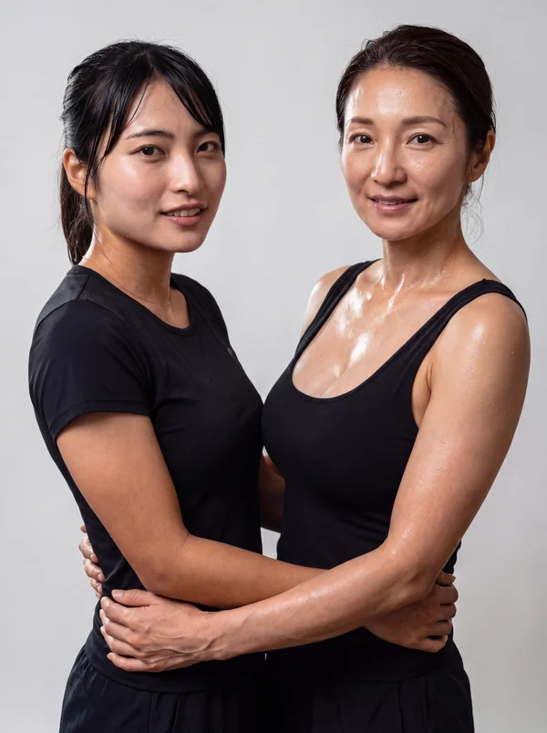

本文へスキップ
GEKKA
CLUBHOUSE
月華について
メンバー
日本語
▼
クラブハウスに戻る
GEKKA / 03
03 / THE ATHLETES
陸上・ダンス
GEKKA CLUBHOUSE / 03
MAYU
マユ
競技
陸上・ダンス
舞台
月華女子大
陸上も、ダンスも。走ることと踊ること、ふたつの「好き」を自分らしく楽しむマユ。
SNS & VIP Lounge
日々の続きは、こちらから。
Instagram
写真と日々のこと
準備中
VIP Lounge
もう少し近くで、その物語を。
準備中
ほかのメンバーに会う

陸上
MIA & RISA
中島 ミア & リサ
陸上
EMMA
五十嵐 エマ
バレーボール
RIO
長田 リオ